科学实验是物理学发展的基础，又是检验物理学理论的唯一手段，特别是现代物理学的发展，更和实验有着密切的联系。现代实验技术的发展，不断地揭示和发现各种新的物理现象，日益加深人们对客观世界规律的正确认识，从而推动物理学的向前发展。
了解在物理学发展过程中起关键性作用的一些实验，对我们学习本课程及相关课程知识有着积极的意义。美国物理学家特里格曾编著了《20世纪物理学的重要实验》和《现代物理学中的关键性实验》这两本重要的教材。
2002年，美国两位学者在全美物理学家中做了一次调查，请他们提名有史以来最出色的十大物理实验，结果刊登在2002年9月的美国《物理世界》杂志上，其中多数都是我们耳熟能详的经典之作。令人惊奇的是十大经典物理实验的核心是他们都抓住了物理学家眼中最美丽的科学之魂：用简单的仪器和设备，发现了最根本、最单纯的科学概念。十大经典物理实验犹如十座历史丰碑，扫开人们长久的困惑和含糊，开辟了对自然界的崭新认识。从十大经典物理实验评选本身，我们也能清楚地看出2000年来科学家们最重大的发现轨迹，就像我们“鸟瞰”历史一样。
第一：托马斯·杨的双缝演示应用于电子干涉实验
第二：伽利略的自由落体实验
第三：罗伯特·密立根的油滴试验
第四：牛顿的棱镜分解太阳光
第五：托马斯·杨的光干涉试验
第六：卡文迪什扭矩实验
第七：埃拉托色尼测量地球圆周
第八：伽利略的加速度试验
第九：卢瑟福散射与原子的有核模型
第十：米歇尔·傅科钟摆试验
第一：托马斯·杨的双缝演示应用于电子干涉实验
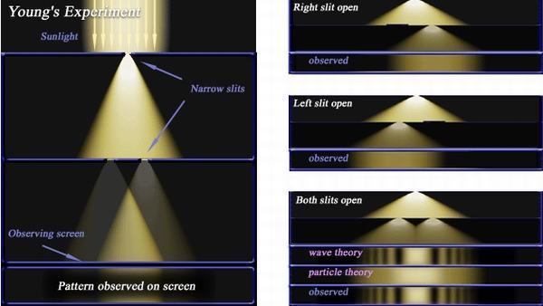 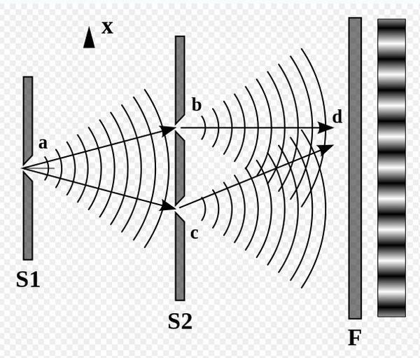在20世纪初的一段时间中，人们逐渐发现了微观客体(光子、电子、质子、中子等)既有波动性，又有粒子性，即所谓的“波粒二象性”。“波动”和“粒子”都是经典物理学中从宏观世界里获得的概念，与我们的直观经验较为相符。然而，微观客体的行为与人们的日常经验毕竟相差很远。如何按照现代量子物理学的观点去准确认识、理解微观世界本身的规律，电子双缝干涉实验为一典型实例。
杨氏的双缝干涉实验是经典的波动光学实验，玻尔和爱因斯坦试图以电子束代替光束来做双缝干涉实验，以此来讨论量子物理学中的基本原理。可是，由于技术的原因，当时它只是一个思想实验。直到1961年，约恩孙制作出长为50mm、宽为0.3mm、缝间距为1mm的双缝，并把一束电子加速到50keV，然后让它们通过双缝。当电子撞击荧光屏时显示了可见的图样，并可用照相机记录图样结果。电子双缝干涉实验的图样与光的双缝干涉实验结果的类似性给人们留下了深刻的印象，这是电子具有波动性的一个实证。更有甚者，实验中即使电子是一个个地发射，仍有相同的干涉图样。但是，当我们试图决定电子究竟是通过哪个缝的，不论用何手段，图样都立即消失，这实际告诉我们，在观察粒子波动性的过程中，任何试图研究粒子的努力都将破坏波动的特性，我们无法同时观察两个方面。要设计出一种仪器，它既能判断电子通过哪个缝，又不干扰图样的出现是绝对做不到的。这是微观世界的规律，并非实验手段的不足。
第二：伽利略的自由落体实验
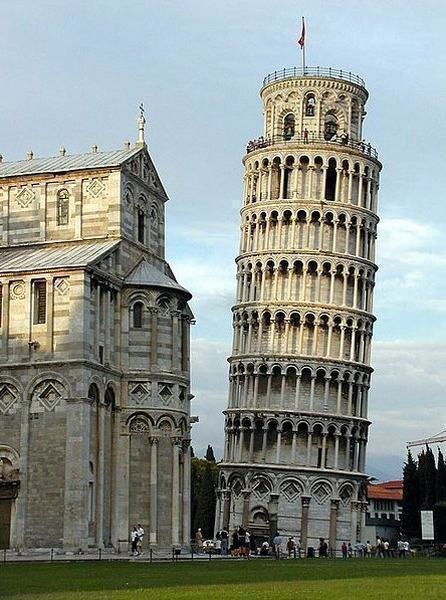伽利略(1564—1642)是近代自然科学的奠基者，是科学史上第一位现代意义上的科学家。他首先为自然科学创立了两个研究法则：观察实验和量化方法，创立了实验和数学相结合、真实实验和理想实验相结合的方法，从而创造了和以往不同的近代科学研究方法，使近代物理学从此走上了以实验精确观测为基础的道路。爱因斯坦高度评价道：“伽利略的发现以及他所应用的科学推理方法是人类思想史上最伟大的成就之一”。
16世纪以前，希腊最著名的思想家和哲学家亚里斯多德是第一个研究物理现象的科学巨人，他的《物理学》一书是世界上最早的物理学专著。但是亚里斯多德在研究物理学时并不依靠实验，而是从原始的直接经验出发，用哲学思辨代替科学实验。亚里斯多德认为每一个物体都有回到自然位置的特性，物体回到自然位置的运动就是自然运动。这种运动取决于物体的本性，不需要外部的作用。自由落体是典型的自然运动，物体越重，回到自然位置的倾向越大，因而在自由落体运动中，物体越重，下落越快；物体越轻，下落越慢。
伽利略当时在比萨大学任职，他大胆地向亚里斯多德的观点挑战。伽利略设想了一个理想实验：让一重物体和一轻物体束缚在一起同时下落。按照亚里斯多德的观点，这一理想实验将会得到两个结论。首先，由于这一联结，重物受到轻物的牵连与阻碍，下落速度将会减慢，下落时间将会延长；其次，也由于这一联结，联结体的重量之和大于原重物体；因而下落时间会更短。显然这是两个截然相反的结论。
伽利略利用理想实验和科学推理，巧妙地揭示了亚里斯多德运动理论的内在矛盾，打开了亚里斯多德运动理论的缺口，导致了物理学的真正诞生。
人们传说伽利略从比萨斜塔上同时扔下一轻一重的物体，让大家看到两个物体同时落地，从而向世人展示了他尊重科学，不畏权威的可贵精神。
自由落体各物理量关系
基于（物体位于靠近地球表面）重力是个常数的假设下牛顿的重力定律是F等于m与g的乘积。即重力是与物体的质量成正比F=mg。重力加速度以g表示一个常数。它是矢量，平均值为9.81单位是m/s^2。除g以外，也可以a表示，取其地心加速度意思，即F=ma。这个加速度是由于物体受到了重力产生的。物体的最初状态是静止的，物体下落中假定除了重力外不受其它力的作用。它下落的路程的长度与经过的时间平方成正比。
自由下落物体在下落的最初位置，即最大高度，具备有重力势能。用下标为P的大写字母E来表示Ep。它的数值是物体的重力与高度的乘积Ep=mgh。这个表达式只在物体距离地球表面高度很小才有效。在下落的过程中，物体无论在那个高度也不论是否同时具有速度，都具有重力势能，其数值同样也是Ep=mgh。如果物体在下落过程中不受其它力的作用，可以忽略空气阻力的时候，其总能量遵守机械能量守恒定则，即重力势能和动能的总和守恒。我们常常用机械能守恒定则来计算，物体可能达到的最大高度，和落到地面瞬间的最大速度。
如果下落时间为t，瞬时速度为vt，位移为X，g为重力加速度，则有以下关系：
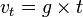 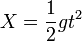 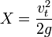典型例子
关掉火箭的太空航行器
月球环绕地球的轨道，地球环绕太阳的轨道，或小行星绕太阳的轨道。
地球上，在真空管中下落，例如：
物理学展示
NASA的零G研究机构（Zero-G Research Facility）
与上面自由落体相反地，以下情形是有其他力量同时在作用，包括了：
站在地上，坐在地面上一把椅子上等等（重量被地面的支持力所平衡）；
搭乘飞机（重量被机翼提供的升力所平衡）；
重返大气层以及降落伞着陆（重量被反向的空气阻力所对抗）；
太空航行器的轨道动作（此时火箭提供推力）。
第三：罗伯特·密立根的油滴试验
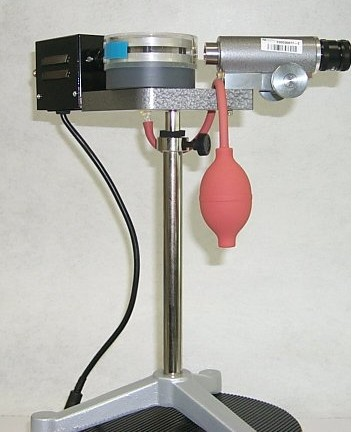
很早以前，科学家就在研究电。人们知道这种无形的物质可以从天上的闪电中得到，也可以通过摩擦头发得到。1897年，英国物理学家托马斯已经得知如何获取负电荷电流。1909年美国科学家罗伯特·密立根(1868—1953)开始测量电流的电荷。
他用一个香水瓶的喷头向一个透明的小盒子里喷油滴。小盒子的顶部和底部分别放有一个通正电的电极和一个通负电的电极。当小油滴通过空气时，就带了一些静电，它们下落的速度可以通过改变电极的电压来控制。当去掉电场时，测量油滴在重力作用下的速度可以得出油滴半径；加上电场后，可测出油滴在重力和电场力共同作用下的速度，并由此测出油滴得到或失去电荷后的速度变化。这样，他可以一次连续几个小时测量油滴的速度变化，即使工作因故被打断，被电场平衡住的油滴经过一个多小时也不会跑多远。
经过反复试验，密立根得出结论：电荷的值是某个固定的常量，最小单位就是单个电子的带电量。他认为电子本身既不是一个假想的也不是不确定的，而是一个“我们这一代人第一次看到的事实”。他在诺贝尔奖获奖演讲中强调了他的工作的两条基本结论，即“电子电荷总是元电荷的确定的整数倍而不是分数倍”和“这一实验的观察者几乎可以认为是看到了电子”。
“科学是用理论和实验这两只脚前进的”，密立根在他的获奖演说中讲道，“有时这只脚先迈出一步，有时是另一只脚先迈出一步，但是前进要靠两只脚：先建立理论然后做实验，或者是先在实验中得出了新的关系，然后再迈出理论这只脚并推动实验前进，如此不断交替进行”。他用非常形象的比喻说明了理论和实验在科学发展中的作用。作为一名实验物理学家，他不但重视实验，也极为重视理论的指导作用。
第四：牛顿的棱镜分解太阳光
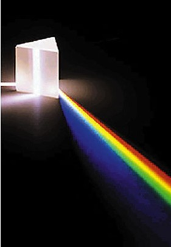 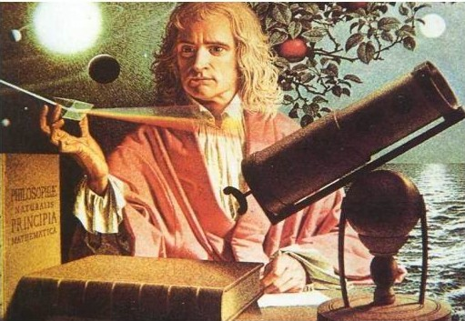对光学问题的研究是牛顿(1642—1727)工作的重要部分之一，亦是他最后未完成的课题。牛顿1665年毕业于剑桥大学的三一学院，当时大家都认为白光是一种纯的没有其他颜色的光；而有色光是一种不知何故发生变化的光(亚里斯多德的理论)。1665—1667年间，年轻的牛顿独自做了一系列实验来研究各种光现象。他把一块三棱镜放在阳光下，透过三棱镜，光在墙上被分解为不同颜色，后来我们将其称作光谱。在他的手里首次使三棱镜变成了光谱仪，真正揭示了颜色起源的本质。1672年2月，牛顿怀着揭露大自然奥秘的兴奋和喜悦，在第一篇正式的科学论文《白光的结构》中，阐述了他的颜色起源学说，“颜色不像一般所认为的那样是从自然物体的折射或反射中所导出的光的性能，而是一种原始的、天生的性质”。“通常的白光确实是每一种不同颜色的光线的混合，光谱的伸长是由于玻璃对这些不同的光线折射本领不同”。
牛顿《光学》著作于1704年问世，其中第一节专门描述了关于颜色起源的棱镜分光实验和讨论，肯定了白光由七种颜色组成。他还给这七种颜色进行了命名，直到现在，全世界的人都在使用牛顿命名的颜色。牛顿指出，“光带被染成这样的彩条：紫色、蓝色、青色、绿色、黄色、橙色、红色，还有所有的中间颜色，连续变化，顺序连接”。正是这些红、橙、黄、绿、青、蓝、紫基础色不同的色谱才形成了表面上颜色单一的白色光，如果你深入地看看，会发现白光是非常美丽的。
这一实验后人可以不断地重复进行，并得到与牛顿相同的实验结果。自此以后七种颜色的理论就被人们普遍接受了。通过这一实验，牛顿为光的色散理论奠定了基础，并使人们对颜色的解释摆脱了主观视觉印象，从而走上了与客观量度相联系的科学轨道。同时，这一实验开创了光谱学研究，不久，光谱分析就成为光学和物质结构研究的主要手段。
第五：托马斯·杨的光干涉试验
牛顿在其《光学》的论著中认为光是由微粒组成的，而不是一种波。因此在其后的近百年间，人们对光学的认识几乎停滞不前，没有取得什么实质性的进展。1800年英国物理学家托马斯·杨(1773—1829)向这个观点提出了挑战，光学研究也获得了飞跃性的发展。
杨在“关于声和光的实验与研究提纲”的论文中指出，光的微粒说存在着两个缺点：一是既然发射出光微粒的力量是多种多样的，那么，为什么又认为所有发光体发出的光都具有同样的速度?二是透明物体表面产生部分反射时，为什么同一类光线有的被反射，有的却透过去了呢?杨认为，如果把光看成类似于声音那样的波动，上述两个缺点就会避免。
为了证明光是波动的，杨在论文中把“干涉”一词引入光学领域，提出光的“干涉原理”，即“同一光源的部分光线当从不同的渠道，恰好由同一个方向或者大致相同的方向进人眼睛时，光程差是固定长度的整数倍时最亮，相干涉的两个部分处于均衡状态时最暗，这个长度因颜色而异”。杨氏对此进行了实验，他在百叶窗上开了一个小洞，然后用厚纸片盖住，再在纸片上戳一个很小的洞。让光线透过，并用一面镜子反射透过的光线。然后他用一个厚约1/30英寸的纸片把这束光从中间分成两束，结果看到了相交的光线和阴影。这说明两束光线可以像波一样相互干涉。这就是著名的“杨氏干涉实验”。
杨氏实验是物理学史上一个非常著名的实验，杨氏以一种非常巧妙的方法获得了两束相干光，观察到了干涉条纹。他第一次以明确的形式提出了光波叠加的原理，并以光的波动性解释了干涉现象。随着光学的发展，人们至今仍能从中提取出很多重要概念和新的认识。无论是经典光学还是近代光学，杨氏实验的意义都是十分重大的。爱因斯坦(1879—1955)指出：光的波动说的成功，在牛顿物理学体系上打开了第一道缺口，揭开了现今所谓的场物理学的第一章。这个试验也为一个世纪后量子学说的创立起到了至关重要的作用。
第六：卡文迪什扭矩实验
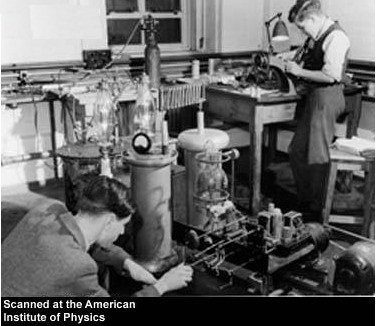 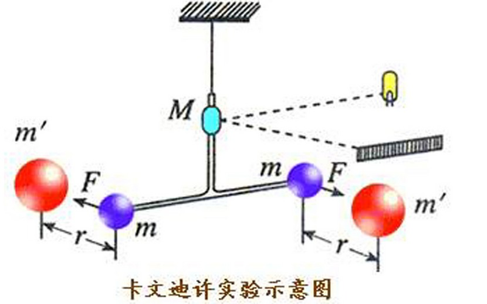牛顿的万有引力理论指出：两个物体之间的吸引力与它们质量的乘积成正比，与它们距离的平方成反比。但是万有引力到底多大?18世纪末，英国科学家亨利·卡文迪什(1731—1810)决定要找到一个计算方法。他把两头带有金属球的6英尺长的木棒用金属线悬吊起来。再用两个350磅重的皮球分别放在两个悬挂着的金属球足够近的地方，以吸引金属球转动，从而使金属线扭动，然后用自制的仪器测量出微小的转动。
测量结果惊人的准确，他测出了万有引力的引力常数G。牛顿万有引力常数G的精确测量不仅对物理学有重要意义，同时也对天体力学、天文观测学，以及地球物理学具有重要的实际意义。人们在卡文迪什实验的基础上可以准确地计算地球的密度和质量。
第七：埃拉托色尼测量地球圆周
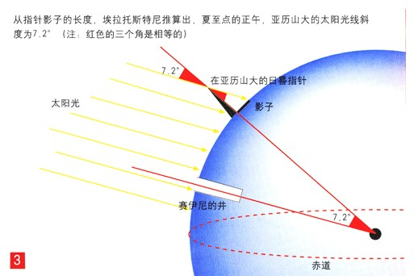埃拉托色尼(约公元前276一约前194)公元前276年生于北非城市塞里尼(今利比亚的沙哈特)。他兴趣广泛，博学多才，是古代仅次于亚里斯多德的百科全书式的学者。只是因为他的著作全部失传，今天才对他不太了解。
埃拉托色尼的科学工作极为广泛，最为著名的成就是测定地球的大小，其方法完全是几何学的。假定地球是一个球体，那么同一个时间在地球上不同的地方，太阳线与地平面的夹角是不一样的。只要测出这个夹角的差以及两地之间的距离，地球周长就可以计算出来。他听说在埃及的塞恩即今天的阿斯旺，夏至这天中午的阳光悬在头顶，物体没有影子，光线可以直射到井底，表明这时的太阳正好垂直塞恩的地面，埃拉托色尼意识到这可以帮助他测量地球的圆周。他测出了塞恩到亚历山大城的距离，又测出夏至正中午时亚历山大城垂直杆的杆长和影长，发现太阳光线有稍稍偏离，与垂直方向大约成7°角。剩下的就是几何问题了。假设地球是球状，那么它的圆周应是360°。如果两座城市成7°角(7/360的圆周)，就是当时5000个希腊运动场的距离，因此地球圆周应该是25万个希腊运动场，约合4万千米。今天我们知道埃拉托色尼的测量误差仅仅在5％以内，即与实际只差100多千米。
第八：伽利略的加速度试验
伽利略利用理想实验和科学推理巧妙地否定了亚里斯多德的自由落体运动理论。那么正确的自由落体运动规律应是怎样的呢?由于当时测量条件的限制，伽利略无法用直接测量运动速度的方法来寻找自由落体的运动规律。因此他设想用斜面来“冲淡”重力，“放慢”运动，而且把速度的测量转化为对路程和时间的测量，并把自由落体运动看成为倾角为90°的斜面运动的特例。在这一思想的指导下，他做了一个6米多长，3米多宽的光滑直木板槽，再把这个木板槽倾斜固定，让铜球从木槽顶端沿斜面滚下，然后测量铜球每次滚下的时间和距离的关系，并研究它们之间的数学关系。亚里斯多德曾预言滚动球的速度是均匀不变的：铜球滚动两倍的时间就走出两倍的路程。伽利略却证明铜球滚动的路程和时间的平方成比例：两倍的时间里，铜球滚动4倍的距离。他把实验过程和结果详细记载在1638年发表的著名的科学著作《关于两门新科学的对话》中。
伽利略在实验的基础上，经过数学的计算和推理，得出假设；然后再用实验加以检验，由此得出正确的自由落体运动规律。这种研究方法后来成了近代自然科学研究的基本程序和方法。
伽利略的斜面加速度实验还是把真实实验和理想实验相结合的典范。伽利略在斜面实验中发现，只要把摩擦减小到可以忽略的程度，小球从一斜面滚下之后，可以滚上另一斜面，而与斜面的倾角无关。也就是说，无论第二个斜面伸展多远，小球总能达到和出发点相同的高度。如果第二斜面水平放置，而且无限延长，则小球会一直运动下去。这实际上是我们现在所说的惯性运动。因此，力不再是亚里斯多德所说的维持运动的原因，而是改变运动状态（加速或减速)的原因。
把真实实验和理想实验相结合，把经验和理性(包括数学论证)相结合的方法，是伽利略对近代科学的重大贡献。实验不是也不可能是自然观象的完全再现，而是在人类理性指导下的对自然现象的一种简化和纯化，因而实验必须有理性的参与和指导。伽利略既重视实验，又重视理性思维，强调科学是用理性思维把自然过程加以纯化、简化，从而找出其数学关系。因此，是伽利略开创了近代自然科学中经验和理性相结合的传统。这一结合不仅对物理学，而且对整个近代自然科学都产生了深远的影响。正如爱因斯坦所说：“人的思维创造出一直在改变的宇宙图景，伽利略对科学的贡献就在于毁灭直觉的观点而用新的观点来代替它。这就是伽利略的发现的重要意义”。
第九：卢瑟福散射与原子的有核模型
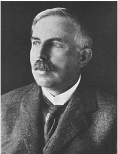 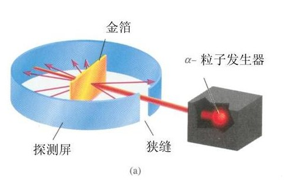卢瑟福(1871—1937)在1898年发现了a射线。1911年卢瑟福在曼彻斯特大学做放射能实验时，原子在人们的印象中就好像是“葡萄干布丁”，即大量正电荷聚集的糊状物质，中间包含着电子微粒，但是他和他的助手发现向金箔发射带正电的a射线微粒时有少量被弹回，这使他们非常吃惊。通过计算证明，只有假设正电球集中了原子的绝大部分质量，并且它的直径比原子直径小得多时，才能正确解释这个不可想象的实验结果。为此卢瑟福提出了原子的有核模型：原子并不是一团糊状物质，大部分物质集中在一个中心的小核上，称之为核子，电子在它周围环绕。
这是一个开创新时代的实验，是一个导致原子物理和原子核物理起始的具有里程碑性质的重要实验。同时他推演出一套可供实验验证的卢瑟福散射理论。以散射为手段研究物质结构的方法，对近代物理有相当重要的影响。一旦我们在散射实验中观察到卢瑟福散射的特征，即所谓“卢瑟福影子”，则可预料到在研究的对象中可能存在着“点”状的亚结构。此外，卢瑟福散射也为材料分析提供了一种有力的手段。根据被靶物质大角散射回来的粒子能谱，可以研究物质材料表面的性质(如有无杂质及杂质的种类和分布等)，按此原理制成的“卢瑟福质谱仪”已得到广泛应用。
第十：米歇尔·傅科钟摆试验
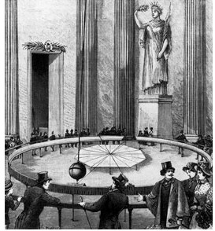 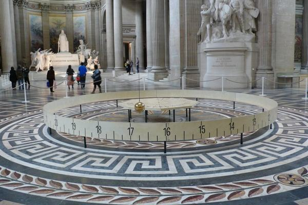1851年，法国著名物理学家傅科(1819—1868)为验证地球自转，当众做了一个实验，用一根长达67m的钢丝吊着一个重28kg的摆锤《摆锤直径0.30m)，摆锤的头上带有钢笔，可观测记录它的摆动轨迹。傅科的演示说明地球是在围绕地轴旋转。在巴黎的纬度上，钟摆的轨迹是顺时针方向，30小时一周期；在南半球，钟摆应是逆时针转动；而在赤道上将不会转动；在南极，转动周期是24小时。
这一实验装置被后人称为傅科摆，也是人类第一次用来验证地球自转的实验装置。该装置可以显示由于地球自转而产生科里奥利力的作用效应，也就是傅科摆振动平面绕铅垂线发生偏转的现象，即傅科效应。实际上这等同于观察者观察到地球在摆下的自转
最漂亮的物理实验TOP10
这是2002年Physics World 的读者评出的.
杨氏双缝上的单电子干涉被评为史上最漂亮的物理实验
Top 10 beautiful experiments
1 单电子双缝干涉实验
Young's double-slit experiment applied to the interference of single electrons
2 伽利略的落体实验
Galileo's experiment on falling bodies (1600s)
3 密立根油滴实验
Millikan's oil-drop experiment (1910s)
4 牛顿棱镜分光实验
Newton's decomposition of sunlight with a prism (1665-1666)
5 杨氏干涉实验
Young's light-interference experiment (1801)
6 卡文迪什扭摆实验测量万有引力常数
Cavendish's torsion-bar experiment (1798)
(从我博文<<卡文迪什给世界称重>>知,这里犯了科学史错误)
7 厄拉多塞测量地球的直径
Eratosthenes' measurement of the Earth's circumference (3rd century BC)
8 伽利略斜面实验
Galileo's experiments with rolling balls down inclined planes (1600s)
9 卢瑟福散射实验
Rutherford's discovery of the nucleus (1911)
10 傅科摆
Foucault's pendulum (1851)
入围的其他实验:
阿基米德的王冠实验： Archimedes’ experiment on hydrostatics
罗默测量光速实验：Roemer’s observations of the speed of light
焦耳热功当量实验：Joule’s paddle-wheel heat experiments
雷诺层流实验：Reynolds’s pipe flow experiment
马赫声冲击波实验：Mach & Salcher’s acoustic shock wave
迈克尔逊-莫雷实验：Michelson-Morley measurement of the null effect of the ether
伦琴发现麦克斯韦位移电流：Röntgen’s detection of Maxwell’s displacement current
奥斯特电磁感应实验：Oersted’s discovery of electromagnetism
布拉格X-射线散射实验：The Braggs’ X-ray diffraction of salt crystals
爱丁顿观测到星光被太阳偏转实验：Eddington’s measurement of the bending of starlight
斯特恩-盖拉赫实验：Stern-Gerlach demonstration of space quantization
薛定谔猫理想实验：Schrödinger’s cat thought experiment
Trinity test of nuclear chain reaction
吴健雄验证宇称不守恒：Wu et al.’s measurement of parity violation
Goldhaber’s study of neutrino helicity
费曼O圈实验：Feynman dipping an O-ring in water